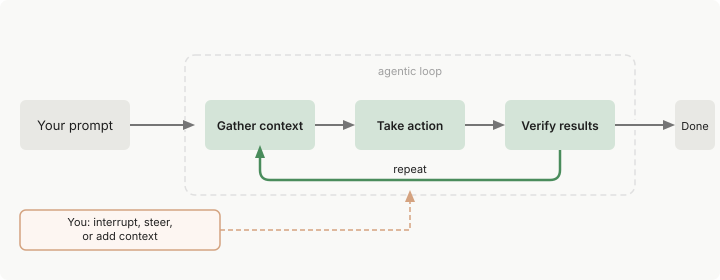
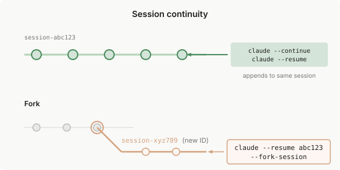

Claude Code 如何工作
了解代理循环、内置工具以及 Claude Code 如何与您的项目交互。
Claude Code 是一个在您的终端中运行的代理助手。虽然它在编码方面表现出色，但它可以帮助您完成从命令行可以做的任何事情：编写文档、运行构建、搜索文件、研究主题等。
本指南涵盖核心架构、内置功能和有效使用 Claude Code 的提示。有关分步演练，请参阅常见工作流。有关 skills、MCP 和 hooks 等可扩展性功能，请参阅扩展 Claude Code。
代理循环
当您给 Claude 一个任务时，它会经历三个阶段：收集上下文、采取行动和验证结果。这些阶段相互融合。Claude 始终使用工具，无论是搜索文件以了解您的代码、编辑以进行更改，还是运行测试以检查其工作。

循环会根据您的要求进行调整。关于您代码库的问题可能只需要收集上下文。错误修复会循环通过所有三个阶段多次。重构可能涉及广泛的验证。Claude 根据从前一步学到的内容决定每一步需要什么，将数十个操作链接在一起并沿途进行纠正。
您也是这个循环的一部分。您可以在任何时刻中断以引导 Claude 朝不同的方向发展、提供额外的上下文或要求它尝试不同的方法。Claude 自主工作但对您的输入保持响应。
代理循环由两个组件驱动：模型进行推理和工具采取行动。Claude Code 是围绕模型的层，提供工具并管理模型看到的上下文。这个周围层就是术语代理框架所指的。
模型
Claude Code 使用 Claude 模型来理解您的代码并推理任务。Claude 可以读取任何语言的代码、理解组件如何连接，以及找出需要改变什么来实现您的目标。对于复杂的任务，它将工作分解为步骤、执行它们，并根据学到的内容进行调整。
多个模型可用，具有不同的权衡。Sonnet 可以很好地处理大多数编码任务。Opus 为复杂的架构决策提供更强的推理能力。在会话期间使用 /model 切换或使用 claude --model <name> 启动。
当本指南说"Claude 选择"或"Claude 决定"时，是模型在进行推理。
工具
工具是使 Claude Code 成为代理的原因。没有工具，Claude 只能用文本回应。有了工具，Claude 可以采取行动：读取您的代码、编辑文件、运行命令、搜索网络并与外部服务交互。每个工具使用都会返回信息，反馈到循环中，告知 Claude 的下一个决定。
内置工具通常分为五个类别，每个类别代表不同类型的代理能力。
| 类别 | Claude 可以做什么 |
|---|---|
| 文件操作 | 读取文件、编辑代码、创建新文件、重命名和重新组织 |
| 搜索 | 按模式查找文件、使用正则表达式搜索内容、探索代码库 |
| 执行 | 运行 shell 命令、启动服务器、运行测试、使用 git |
| 网络 | 搜索网络、获取文档、查找错误消息 |
| 代码智能 | 编辑后查看类型错误和警告、跳转到定义、查找引用（需要代码智能插件） |
这些是主要功能。Claude 还有用于生成 subagents、询问您问题和其他编排任务的工具。有关完整列表，请参阅Claude 可用的工具。
Claude 根据您的提示和沿途学到的内容选择使用哪些工具。当您说"修复失败的测试"时，Claude 可能会：
- 运行测试套件以查看失败的内容
- 读取错误输出
- 搜索相关的源文件
- 读取这些文件以理解代码
- 编辑文件以修复问题
- 再次运行测试以验证
每个工具使用都给 Claude 新的信息，告知下一步。这就是代理循环的实际应用。
扩展基本功能： 内置工具是基础。您可以使用 skills 扩展 Claude 知道的内容、使用 MCP 连接到外部服务、使用 hooks 自动化工作流，以及将任务卸载给 subagents。这些扩展形成了核心代理循环之上的一层。有关为您的需求选择正确扩展的指导，请参阅扩展 Claude Code。
Claude 可以访问什么
当您在目录中运行 claude 时，Claude Code 可以访问：
- 您的项目。 您目录和子目录中的文件，以及其他地方有您许可的文件。
- 您的终端。 您可以运行的任何命令：构建工具、git、包管理器、系统实用程序、脚本。如果您可以从命令行做到，Claude 也可以。
- 您的 git 状态。 当前分支、未提交的更改和最近的提交历史。
- 您的 CLAUDE.md。 一个 markdown 文件，您可以在其中存储项目特定的说明、约定和 Claude 应该在每个会话中了解的上下文。如果您的仓库有用于其他编码 Agent 的 AGENTS.md，Claude 可以读取它来代替 CLAUDE.md。
- 自动内存。 Claude 在您工作时自动保存的学习内容，如您的偏好。MEMORY.md 的前 200 行或 25KB（以先到者为准）在每个会话开始时加载。
- 您配置的扩展。 用于外部服务的 MCP servers、用于工作流的 skills、用于委派工作的 subagents 和用于浏览器交互的 Claude in Chrome。
因为 Claude 看到您的整个项目，它可以跨越它工作。当您要求 Claude"修复身份验证错误"时，它搜索相关文件、读取多个文件以理解上下文、跨它们进行协调编辑、运行测试以验证修复，并在您要求时提交更改。这与只看到当前文件的内联代码助手不同。
环境和界面
代理循环、工具 和功能在您使用 Claude Code 的任何地方都是相同的。改变的是代码执行的位置以及您与它交互的方式。
执行环境
Claude Code 在三个环境中运行，每个环境对代码执行位置有不同的权衡。
| 环境 | 代码运行位置 | 用例 |
|---|---|---|
| 本地 | 您的机器 | 默认。完全访问您的文件、工具和环境 |
| 云 | Anthropic 管理的虚拟机，或您的组织运营的自托管环境 | 卸载任务、处理您本地没有的仓库 |
| 远程控制 | 您的机器，从浏览器控制 | 使用网络 UI 同时保持执行和文件本地 |
界面
您可以通过终端、桌面应用、IDE 扩展、claude.ai/code、远程控制、Slack 和 CI/CD 管道访问 Claude Code。界面决定了您如何看到和与 Claude 交互，但底层的代理循环是相同的。有关完整列表，请参阅在任何地方使用 Claude Code。
使用会话
Claude Code 在您工作时将您的对话保存在本地。每条消息、工具使用和结果都被写入 ~/.claude/projects/ 下的纯文本 JSONL 文件，这使得回退、恢复和分叉会话成为可能。在 Claude 进行代码更改之前，它还会对受影响的文件进行快照，以便您在需要时可以恢复。有关路径、保留和如何清除此数据，请参阅~/.claude 中的应用数据。
会话是独立的。 每个新会话都以新的上下文窗口开始，没有来自以前会话的对话历史。Claude 可以使用自动内存跨会话保持学习，您可以在 CLAUDE.md 中添加您自己的持久说明。
跨分支工作
每个 Claude Code 对话都是一个与您当前目录相关的会话。/resume 选择器默认显示来自当前 worktree 的会话，带有键盘快捷键以扩展列表到其他 worktrees 或项目。有关选择器快捷键的完整列表以及名称解析如何工作，请参阅管理会话。
Claude 看到您当前分支的文件。当您切换分支时，Claude 看到新分支的文件，但您的对话历史保持不变。Claude 记得您讨论过的内容，即使在切换后也是如此。
由于会话与目录相关，您可以通过使用 git worktrees 运行并行 Claude 会话，这为各个分支创建单独的目录。
恢复或分叉会话
使用 claude --continue 或 claude --resume 恢复会话会在相同的会话 ID 下重新打开它，并将新消息附加到现有对话。使用 --fork-session 或 /branch 分叉会将历史复制到新的会话 ID 中，保持原始会话不变。

有关恢复标志、/resume 选择器、命名以及当相同会话在两个终端中打开时会发生什么，请参阅管理会话。
上下文窗口
Claude 的上下文窗口保存您的对话历史、文件内容、命令输出、CLAUDE.md、自动内存、加载的 skills 和系统说明。当您工作时，上下文填满。Claude 自动压缩，但对话早期的说明可能会丢失。将持久规则放在 CLAUDE.md 中，并运行 /context 以查看什么在占用空间。
有关交互式演练，了解什么加载以及何时加载，请参阅探索上下文窗口。
Claude Code 自己添加的上下文
如果 Claude 遵循您没有编写的规则，例如向提交添加 Co-Authored-By 预告片，该规则可能来自系统提醒。当您工作时，Claude Code 会在您的消息旁边向对话添加自己的上下文：
- 您的 CLAUDE.md 文件
- 您的输出样式的说明
- 当 Claude 之前读取的文件在磁盘上更改时的注记
- 提交和拉取请求的归属行
要更改或删除归属行，请设置 attribution。要删除 Claude Code 的内置提交和拉取请求说明，请将 includeGitInstructions 设置为 false。有关其他开关，请参阅关闭您的代理替换的上下文。
当上下文填满时
Claude Code 在您接近限制时自动管理上下文。它会将对话压缩为摘要。摘要会保留您的请求和关键代码片段，但对话早期的详细说明可能会丢失。将持久规则放在 CLAUDE.md 中，而不是依赖对话历史。
要控制在压缩期间保留的内容，请在 CLAUDE.md 中添加"Compact Instructions"部分或使用焦点运行 /compact（如 /compact focus on the API changes）。
如果单个文件或工具输出太大，以至于在每次总结后上下文立即重新填充，Claude Code 会在几次尝试后停止自动压缩，并显示错误而不是循环。有关恢复步骤，请参阅自动压缩停止并出现抖动错误。
运行 /context 以查看什么在占用空间。MCP 工具定义默认被延迟，并通过工具搜索按需加载，因此只有工具名称和服务器说明消耗上下文，直到 Claude 使用特定工具。
使用 skills 和 subagents 管理上下文
除了压缩，您可以使用其他功能来控制什么加载到上下文中。
Skills 按需加载。Claude 在会话开始时看到 skill 描述，但完整内容仅在使用 skill 时加载。对于您手动调用的 skills，设置 disable-model-invocation: true 以将描述保留在上下文之外，直到您需要它们。对于您没有编写的 skills，使用 skillOverrides 从设置中执行相同操作。
Subagents 在自己的上下文窗口中工作。subagent 会从新开始，除非它是一个分叉，它会从您到目前为止的对话副本开始。无论哪种方式，subagent 的工具调用都保留在您的上下文之外，当 subagent 完成时 Claude 会获得一个摘要。
有关每个功能的成本，请参阅上下文成本，有关管理上下文的提示，请参阅减少令牌使用。
使用检查点和权限保持安全
Claude 有两个安全机制：checkpoints 让您撤销文件更改，权限控制 Claude 可以在不询问的情况下做什么。
使用 checkpoints 撤销更改
文件编辑是可逆的。 在 Claude 编辑文件之前，它会对当前内容进行快照。如果出现问题，按两次 Esc 以回退到之前的状态，或要求 Claude 撤销。
Checkpoints 独立于 git，在您恢复对话时仍然可用。它们仅涵盖文件更改，restore 会跳过符号链接和硬链接文件。影响远程系统的操作（数据库、API、部署）无法进行 checkpointing。您可以通过权限模式和权限规则来控制这些操作。
控制 Claude 可以做什么
选择一个权限模式来设置 Claude 可以在不询问您的情况下做什么。按 Shift+Tab 循环通过权限模式：
- Auto：分类器在后台审查大多数操作，并阻止风险操作而不是询问您。在 Claude Code v2.1.283 或更高版本中，它是交互式终端和 VS Code 会话的内置起始权限模式。在早期版本中，它仅在 Pro、Max、Ultra 和 Team 计划上是内置起始权限模式。
- Manual：Claude 在文件编辑和 shell 命令之前询问
- Accept edits：Claude 编辑文件并运行常见的文件系统命令（如
mkdir和mv）而不询问，仍然询问其他命令 - Plan：Claude 探索并提出计划而不编辑您的源文件
您也可以在 .claude/settings.json 中允许特定命令，以便 Claude 不会每次都询问。这对于受信任的命令（如 npm test 或 git status）很有用。设置可以从组织范围的策略范围到个人偏好。有关详细信息，请参阅权限。
有效使用 Claude Code
这些提示可以帮助您从 Claude Code 获得更好的结果。有关具体提示词、验证，以及哪些规则值得强制执行而非通过提示词要求的更多信息，请参阅最佳实践。
向 Claude Code 寻求帮助
Claude Code 可以教您如何使用它。提出问题，如"我如何设置 hooks？"或"构建我的 CLAUDE.md 的最佳方式是什么？"，Claude 会解释。
内置命令也会指导您完成设置：
/init为您的项目生成一个启动 CLAUDE.md/doctor运行设置检查，诊断安装和配置问题，并可以修复它们
这是一个对话
Claude Code 是对话式的。您不需要完美的提示。从您想要的开始，然后细化：
修复登录错误
[Claude 调查，尝试一些东西]
这不太对。问题在于会话处理。
[Claude 调整方法]
当第一次尝试不对时，您不会重新开始。您迭代。
中断和引导
您可以在任何时刻重定向 Claude，无需重新开始。执行以下任一操作：
- 按
Esc立即停止 Claude。正在运行的工具调用被取消，Claude 等待您的下一条指令。如果您有排队的消息，Claude Code 会接下来发送它们。 - 输入更正并按
Enter在不停止 Claude 的情况下。消息显示为在对话中排队。如果 Claude 正在运行工具调用，它会在这些调用完成后立即读取消息，在同一轮内，并在下一步之前进行调整。在 Claude 工作时排队消息涵盖何时发送其他排队条目。
委派，不要指示
想象委派给一个有能力的同事。提供上下文和方向，然后相信 Claude 会弄清楚细节：
结账流程对于持有过期卡的用户来说已损坏。
相关代码在 src/payments/ 中。您可以调查并修复它吗？
您不需要指定要读取哪些文件或运行什么命令。Claude 会弄清楚。
接下来是什么
[card] 使用功能扩展
添加 skills 和 MCP 连接
[card] 常见工作流
典型任务的分步指南